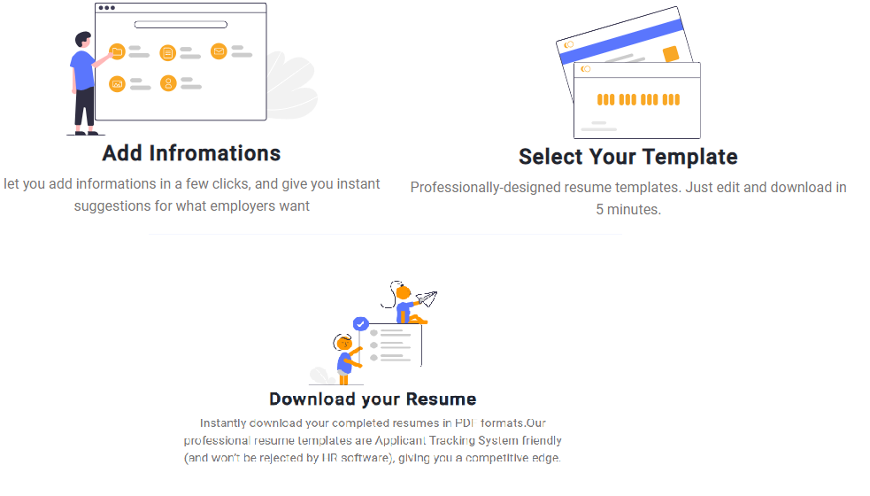

<div class="main">
    <mat-drawer-container>
        <mat-drawer mode="side" [opened]="sideBarOpen">
          <!-- <mat-drawer mode="side" opened="true"> -->
          <app-sidenav></app-sidenav>
        </mat-drawer>
        
      <mat-drawer-content>
    
          <div class="container-fluid page">
            <div class="d-flex page__box p-3 mt-2">DashBoard </div>
          <div class="d-flex page__add ">
       <a mat-list-item routerLink="/addforms"> <mat-icon>add</mat-icon > Create </a>
      </div>
            <div class="page__content shadow p-3 position-relative">
              <div class="page__content-data  position-relative">
                <!-- <app-viewdashboard></app-viewdashboard> -->
                
                <!-- <mat-nav-list >
                  <mat-icon>edit</mat-icon >  <a mat-list-item > resume 1 </a><br>
                    <mat-icon>edit</mat-icon > <a mat-list-item >  resume 2 </a><br>
                      <mat-icon>edit</mat-icon > <a mat-list-item >  resume 3 </a><br>
                  </mat-nav-list> -->
            </div>
          </div>
    </div>